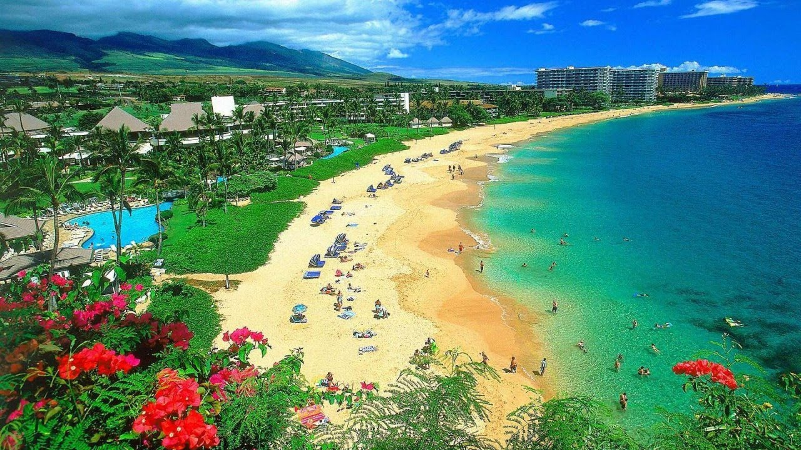

Tour Route
Maldives
Taiwan
Helsinki
Barcelona
London
Hong Kong
Paris
Venice
Maui
Prague
Greece
Sydney
Cuba
Vancouver
Budapest
|
Maui
Country: USA
Rank:11
Tag:Natural; Adventure; Outdoor; Island

When it comes to outdoor adventure, Maui wins best in show. Just check out that
zipliner launching into a canopy of green. Or the mountain biker hurtling past
eucalyptus and pine. Hikers have it darn good too, with trails winding through
lava flows and bamboo forests. Along the coast, surfers barrel through waves,
windboarders skim across whitecaps and snorkelers glide beside green turtles.
People who have been to Maldives:
-
And we haven't even mentioned Maui's most iconic adventures – all of them
flanked by once-in-a-lifetime backdrops. Along the Road to Hana, lofty
waterfalls plunge into shimmering pools. A mesmerizing sunrise illuminates the
cindery summit of Haleakalā. And the view from Makena Bay? Downright sublime in
winter when kayakers share the sea with frolicking humpback whales.
reviewID:r11
Highlights:
-
Top-notch restaurants and lodging enhance the island's natural charms. From
scrappy food trucks to white-linen dining rooms, eateries embrace local food and
its traditions. Resorts wow guests with impeccable service and prime seaside
locations.
Things To Do:
- Pacific Whale Foundation
telephone:+1 8086677447address:612 Front St, Lahaina USAmoreInfo:www.pacificwhale.orgopenHours:reservations 6am-9pm,snorkel tours from 7am
People who like this place also like to go to:
Maldives
Cuba
source:
Lonely Planet:
www.lonelyplanet.com/
|